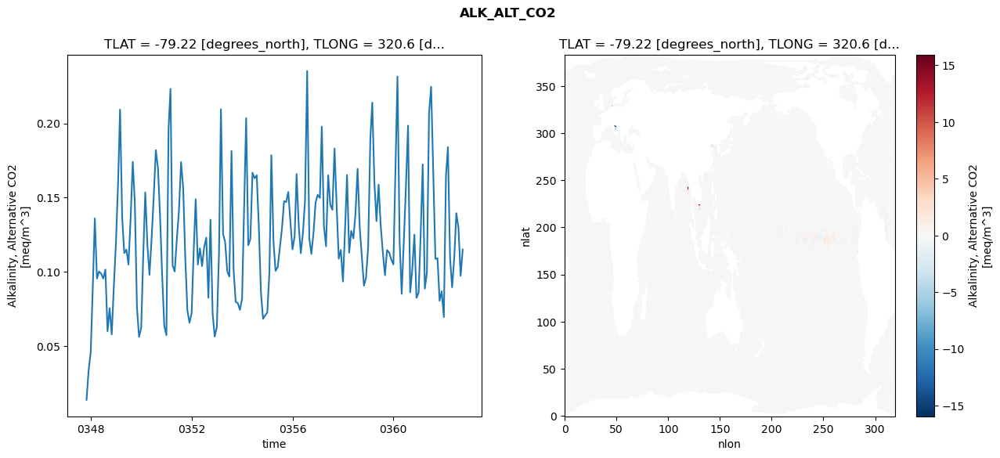
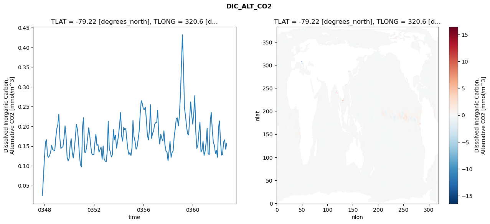
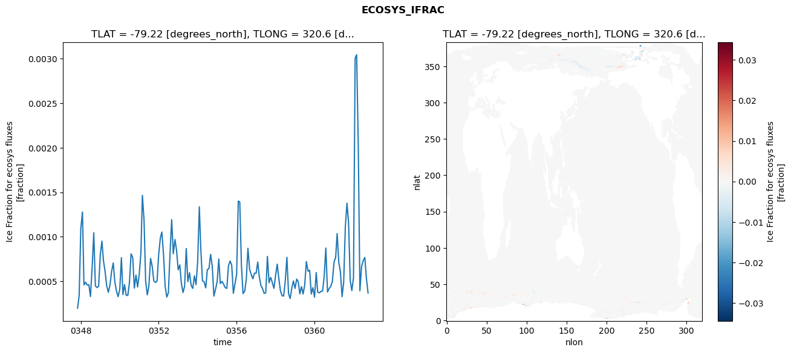
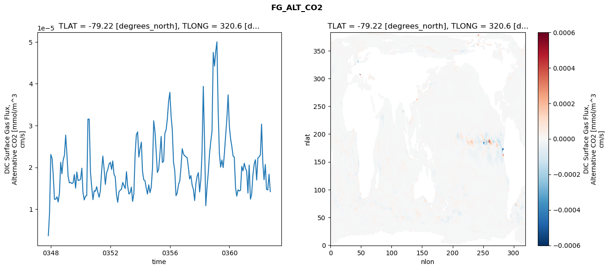

glb-dor_North_Atlantic_basin_009_1999-10-01_00039#
Simulation details#
Case: smyle.cdr-atlas-v0.glb-dor_North_Atlantic_basin_009_1999-10-01_00039.001
Basin: North_Atlantic_basin
Polygon: 9.0
Start date: 1999-10
Show code cell source Hide code cell source
import xarray as xr
import matplotlib.pyplot as plt
Show code cell source Hide code cell source
zarr_store = "/path/to/zarr/store"
# Parameters
zarr_store = "/global/cfs/projectdirs/m4746/Projects/Ocean-CDR-Atlas-v0/data/validation/smyle.cdr-atlas-v0.glb-dor_North_Atlantic_basin_009_1999-10-01_00039.001.validation.zarr"
Show code cell source Hide code cell source
%%time
ds_o = xr.open_zarr(zarr_store).compute()
ds_o
CPU times: user 721 ms, sys: 462 ms, total: 1.18 s
Wall time: 1.52 s
<xarray.Dataset> Size: 2MB
Dimensions: (nlat: 384, nlon: 320, time: 180)
Coordinates:
TLAT float64 8B -79.22
TLONG float64 8B 320.6
ULAT float64 8B -78.95
ULONG float64 8B 321.1
* time (time) object 1kB 0347-11-01 00:00:00 ... 0362-10-01 0...
z_t float32 4B 500.0
Dimensions without coordinates: nlat, nlon
Data variables:
ALK_ALT_CO2_diff (nlat, nlon) float32 492kB nan nan nan ... nan nan nan
ALK_ALT_CO2_rmse (time) float64 1kB 0.01382 0.03347 ... 0.09736 0.115
DIC_ALT_CO2_diff (nlat, nlon) float32 492kB nan nan nan ... nan nan nan
DIC_ALT_CO2_rmse (time) float64 1kB 0.02462 0.07065 ... 0.142 0.1569
ECOSYS_IFRAC_diff (nlat, nlon) float32 492kB nan nan nan ... nan nan nan
ECOSYS_IFRAC_rmse (time) float64 1kB 0.0001971 0.0003391 ... 0.0003678
FG_ALT_CO2_diff (nlat, nlon) float32 492kB nan nan nan ... nan nan nan
FG_ALT_CO2_rmse (time) float64 1kB 3.653e-06 9.084e-06 ... 1.419e-05xarray.Dataset
- nlat: 384
- nlon: 320
- time: 180
- TLAT()float64-79.22
- long_name :
- array of t-grid latitudes
- units :
- degrees_north
array(-79.22052261)
- TLONG()float64320.6
- long_name :
- array of t-grid longitudes
- units :
- degrees_east
array(320.56250892)
- ULAT()float64-78.95
- long_name :
- array of u-grid latitudes
- units :
- degrees_north
array(-78.95289509)
- ULONG()float64321.1
- long_name :
- array of u-grid longitudes
- units :
- degrees_east
array(321.12500894)
- time(time)object0347-11-01 00:00:00 ... 0362-10-...
- bounds :
- time_bound
- long_name :
- time
array([cftime.DatetimeNoLeap(347, 11, 1, 0, 0, 0, 0, has_year_zero=True), cftime.DatetimeNoLeap(347, 12, 1, 0, 0, 0, 0, has_year_zero=True), cftime.DatetimeNoLeap(348, 1, 1, 0, 0, 0, 0, has_year_zero=True), cftime.DatetimeNoLeap(348, 2, 1, 0, 0, 0, 0, has_year_zero=True), cftime.DatetimeNoLeap(348, 3, 1, 0, 0, 0, 0, has_year_zero=True), cftime.DatetimeNoLeap(348, 4, 1, 0, 0, 0, 0, has_year_zero=True), cftime.DatetimeNoLeap(348, 5, 1, 0, 0, 0, 0, has_year_zero=True), cftime.DatetimeNoLeap(348, 6, 1, 0, 0, 0, 0, has_year_zero=True), cftime.DatetimeNoLeap(348, 7, 1, 0, 0, 0, 0, has_year_zero=True), cftime.DatetimeNoLeap(348, 8, 1, 0, 0, 0, 0, has_year_zero=True), cftime.DatetimeNoLeap(348, 9, 1, 0, 0, 0, 0, has_year_zero=True), cftime.DatetimeNoLeap(348, 10, 1, 0, 0, 0, 0, has_year_zero=True), cftime.DatetimeNoLeap(348, 11, 1, 0, 0, 0, 0, has_year_zero=True), cftime.DatetimeNoLeap(348, 12, 1, 0, 0, 0, 0, has_year_zero=True), cftime.DatetimeNoLeap(349, 1, 1, 0, 0, 0, 0, has_year_zero=True), cftime.DatetimeNoLeap(349, 2, 1, 0, 0, 0, 0, has_year_zero=True), cftime.DatetimeNoLeap(349, 3, 1, 0, 0, 0, 0, has_year_zero=True), cftime.DatetimeNoLeap(349, 4, 1, 0, 0, 0, 0, has_year_zero=True), cftime.DatetimeNoLeap(349, 5, 1, 0, 0, 0, 0, has_year_zero=True), cftime.DatetimeNoLeap(349, 6, 1, 0, 0, 0, 0, has_year_zero=True), cftime.DatetimeNoLeap(349, 7, 1, 0, 0, 0, 0, has_year_zero=True), cftime.DatetimeNoLeap(349, 8, 1, 0, 0, 0, 0, has_year_zero=True), cftime.DatetimeNoLeap(349, 9, 1, 0, 0, 0, 0, has_year_zero=True), cftime.DatetimeNoLeap(349, 10, 1, 0, 0, 0, 0, has_year_zero=True), cftime.DatetimeNoLeap(349, 11, 1, 0, 0, 0, 0, has_year_zero=True), cftime.DatetimeNoLeap(349, 12, 1, 0, 0, 0, 0, has_year_zero=True), cftime.DatetimeNoLeap(350, 1, 1, 0, 0, 0, 0, has_year_zero=True), cftime.DatetimeNoLeap(350, 2, 1, 0, 0, 0, 0, has_year_zero=True), cftime.DatetimeNoLeap(350, 3, 1, 0, 0, 0, 0, has_year_zero=True), cftime.DatetimeNoLeap(350, 4, 1, 0, 0, 0, 0, has_year_zero=True), cftime.DatetimeNoLeap(350, 5, 1, 0, 0, 0, 0, has_year_zero=True), cftime.DatetimeNoLeap(350, 6, 1, 0, 0, 0, 0, has_year_zero=True), cftime.DatetimeNoLeap(350, 7, 1, 0, 0, 0, 0, has_year_zero=True), cftime.DatetimeNoLeap(350, 8, 1, 0, 0, 0, 0, has_year_zero=True), cftime.DatetimeNoLeap(350, 9, 1, 0, 0, 0, 0, has_year_zero=True), cftime.DatetimeNoLeap(350, 10, 1, 0, 0, 0, 0, has_year_zero=True), cftime.DatetimeNoLeap(350, 11, 1, 0, 0, 0, 0, has_year_zero=True), cftime.DatetimeNoLeap(350, 12, 1, 0, 0, 0, 0, has_year_zero=True), cftime.DatetimeNoLeap(351, 1, 1, 0, 0, 0, 0, has_year_zero=True), cftime.DatetimeNoLeap(351, 2, 1, 0, 0, 0, 0, has_year_zero=True), cftime.DatetimeNoLeap(351, 3, 1, 0, 0, 0, 0, has_year_zero=True), cftime.DatetimeNoLeap(351, 4, 1, 0, 0, 0, 0, has_year_zero=True), cftime.DatetimeNoLeap(351, 5, 1, 0, 0, 0, 0, has_year_zero=True), cftime.DatetimeNoLeap(351, 6, 1, 0, 0, 0, 0, has_year_zero=True), cftime.DatetimeNoLeap(351, 7, 1, 0, 0, 0, 0, has_year_zero=True), cftime.DatetimeNoLeap(351, 8, 1, 0, 0, 0, 0, has_year_zero=True), cftime.DatetimeNoLeap(351, 9, 1, 0, 0, 0, 0, has_year_zero=True), cftime.DatetimeNoLeap(351, 10, 1, 0, 0, 0, 0, has_year_zero=True), cftime.DatetimeNoLeap(351, 11, 1, 0, 0, 0, 0, has_year_zero=True), cftime.DatetimeNoLeap(351, 12, 1, 0, 0, 0, 0, has_year_zero=True), cftime.DatetimeNoLeap(352, 1, 1, 0, 0, 0, 0, has_year_zero=True), cftime.DatetimeNoLeap(352, 2, 1, 0, 0, 0, 0, has_year_zero=True), cftime.DatetimeNoLeap(352, 3, 1, 0, 0, 0, 0, has_year_zero=True), cftime.DatetimeNoLeap(352, 4, 1, 0, 0, 0, 0, has_year_zero=True), cftime.DatetimeNoLeap(352, 5, 1, 0, 0, 0, 0, has_year_zero=True), cftime.DatetimeNoLeap(352, 6, 1, 0, 0, 0, 0, has_year_zero=True), cftime.DatetimeNoLeap(352, 7, 1, 0, 0, 0, 0, has_year_zero=True), cftime.DatetimeNoLeap(352, 8, 1, 0, 0, 0, 0, has_year_zero=True), cftime.DatetimeNoLeap(352, 9, 1, 0, 0, 0, 0, has_year_zero=True), cftime.DatetimeNoLeap(352, 10, 1, 0, 0, 0, 0, has_year_zero=True), cftime.DatetimeNoLeap(352, 11, 1, 0, 0, 0, 0, has_year_zero=True), cftime.DatetimeNoLeap(352, 12, 1, 0, 0, 0, 0, has_year_zero=True), cftime.DatetimeNoLeap(353, 1, 1, 0, 0, 0, 0, has_year_zero=True), cftime.DatetimeNoLeap(353, 2, 1, 0, 0, 0, 0, has_year_zero=True), cftime.DatetimeNoLeap(353, 3, 1, 0, 0, 0, 0, has_year_zero=True), cftime.DatetimeNoLeap(353, 4, 1, 0, 0, 0, 0, has_year_zero=True), cftime.DatetimeNoLeap(353, 5, 1, 0, 0, 0, 0, has_year_zero=True), cftime.DatetimeNoLeap(353, 6, 1, 0, 0, 0, 0, has_year_zero=True), cftime.DatetimeNoLeap(353, 7, 1, 0, 0, 0, 0, has_year_zero=True), cftime.DatetimeNoLeap(353, 8, 1, 0, 0, 0, 0, has_year_zero=True), cftime.DatetimeNoLeap(353, 9, 1, 0, 0, 0, 0, has_year_zero=True), cftime.DatetimeNoLeap(353, 10, 1, 0, 0, 0, 0, has_year_zero=True), cftime.DatetimeNoLeap(353, 11, 1, 0, 0, 0, 0, has_year_zero=True), cftime.DatetimeNoLeap(353, 12, 1, 0, 0, 0, 0, has_year_zero=True), cftime.DatetimeNoLeap(354, 1, 1, 0, 0, 0, 0, has_year_zero=True), cftime.DatetimeNoLeap(354, 2, 1, 0, 0, 0, 0, has_year_zero=True), cftime.DatetimeNoLeap(354, 3, 1, 0, 0, 0, 0, has_year_zero=True), cftime.DatetimeNoLeap(354, 4, 1, 0, 0, 0, 0, has_year_zero=True), cftime.DatetimeNoLeap(354, 5, 1, 0, 0, 0, 0, has_year_zero=True), cftime.DatetimeNoLeap(354, 6, 1, 0, 0, 0, 0, has_year_zero=True), cftime.DatetimeNoLeap(354, 7, 1, 0, 0, 0, 0, has_year_zero=True), cftime.DatetimeNoLeap(354, 8, 1, 0, 0, 0, 0, has_year_zero=True), cftime.DatetimeNoLeap(354, 9, 1, 0, 0, 0, 0, has_year_zero=True), cftime.DatetimeNoLeap(354, 10, 1, 0, 0, 0, 0, has_year_zero=True), cftime.DatetimeNoLeap(354, 11, 1, 0, 0, 0, 0, has_year_zero=True), cftime.DatetimeNoLeap(354, 12, 1, 0, 0, 0, 0, has_year_zero=True), cftime.DatetimeNoLeap(355, 1, 1, 0, 0, 0, 0, has_year_zero=True), cftime.DatetimeNoLeap(355, 2, 1, 0, 0, 0, 0, has_year_zero=True), cftime.DatetimeNoLeap(355, 3, 1, 0, 0, 0, 0, has_year_zero=True), cftime.DatetimeNoLeap(355, 4, 1, 0, 0, 0, 0, has_year_zero=True), cftime.DatetimeNoLeap(355, 5, 1, 0, 0, 0, 0, has_year_zero=True), cftime.DatetimeNoLeap(355, 6, 1, 0, 0, 0, 0, has_year_zero=True), cftime.DatetimeNoLeap(355, 7, 1, 0, 0, 0, 0, has_year_zero=True), cftime.DatetimeNoLeap(355, 8, 1, 0, 0, 0, 0, has_year_zero=True), cftime.DatetimeNoLeap(355, 9, 1, 0, 0, 0, 0, has_year_zero=True), cftime.DatetimeNoLeap(355, 10, 1, 0, 0, 0, 0, has_year_zero=True), cftime.DatetimeNoLeap(355, 11, 1, 0, 0, 0, 0, has_year_zero=True), cftime.DatetimeNoLeap(355, 12, 1, 0, 0, 0, 0, has_year_zero=True), cftime.DatetimeNoLeap(356, 1, 1, 0, 0, 0, 0, has_year_zero=True), cftime.DatetimeNoLeap(356, 2, 1, 0, 0, 0, 0, has_year_zero=True), cftime.DatetimeNoLeap(356, 3, 1, 0, 0, 0, 0, has_year_zero=True), cftime.DatetimeNoLeap(356, 4, 1, 0, 0, 0, 0, has_year_zero=True), cftime.DatetimeNoLeap(356, 5, 1, 0, 0, 0, 0, has_year_zero=True), cftime.DatetimeNoLeap(356, 6, 1, 0, 0, 0, 0, has_year_zero=True), cftime.DatetimeNoLeap(356, 7, 1, 0, 0, 0, 0, has_year_zero=True), cftime.DatetimeNoLeap(356, 8, 1, 0, 0, 0, 0, has_year_zero=True), cftime.DatetimeNoLeap(356, 9, 1, 0, 0, 0, 0, has_year_zero=True), cftime.DatetimeNoLeap(356, 10, 1, 0, 0, 0, 0, has_year_zero=True), cftime.DatetimeNoLeap(356, 11, 1, 0, 0, 0, 0, has_year_zero=True), cftime.DatetimeNoLeap(356, 12, 1, 0, 0, 0, 0, has_year_zero=True), cftime.DatetimeNoLeap(357, 1, 1, 0, 0, 0, 0, has_year_zero=True), cftime.DatetimeNoLeap(357, 2, 1, 0, 0, 0, 0, has_year_zero=True), cftime.DatetimeNoLeap(357, 3, 1, 0, 0, 0, 0, has_year_zero=True), cftime.DatetimeNoLeap(357, 4, 1, 0, 0, 0, 0, has_year_zero=True), cftime.DatetimeNoLeap(357, 5, 1, 0, 0, 0, 0, has_year_zero=True), cftime.DatetimeNoLeap(357, 6, 1, 0, 0, 0, 0, has_year_zero=True), cftime.DatetimeNoLeap(357, 7, 1, 0, 0, 0, 0, has_year_zero=True), cftime.DatetimeNoLeap(357, 8, 1, 0, 0, 0, 0, has_year_zero=True), cftime.DatetimeNoLeap(357, 9, 1, 0, 0, 0, 0, has_year_zero=True), cftime.DatetimeNoLeap(357, 10, 1, 0, 0, 0, 0, has_year_zero=True), cftime.DatetimeNoLeap(357, 11, 1, 0, 0, 0, 0, has_year_zero=True), cftime.DatetimeNoLeap(357, 12, 1, 0, 0, 0, 0, has_year_zero=True), cftime.DatetimeNoLeap(358, 1, 1, 0, 0, 0, 0, has_year_zero=True), cftime.DatetimeNoLeap(358, 2, 1, 0, 0, 0, 0, has_year_zero=True), cftime.DatetimeNoLeap(358, 3, 1, 0, 0, 0, 0, has_year_zero=True), cftime.DatetimeNoLeap(358, 4, 1, 0, 0, 0, 0, has_year_zero=True), cftime.DatetimeNoLeap(358, 5, 1, 0, 0, 0, 0, has_year_zero=True), cftime.DatetimeNoLeap(358, 6, 1, 0, 0, 0, 0, has_year_zero=True), cftime.DatetimeNoLeap(358, 7, 1, 0, 0, 0, 0, has_year_zero=True), cftime.DatetimeNoLeap(358, 8, 1, 0, 0, 0, 0, has_year_zero=True), cftime.DatetimeNoLeap(358, 9, 1, 0, 0, 0, 0, has_year_zero=True), cftime.DatetimeNoLeap(358, 10, 1, 0, 0, 0, 0, has_year_zero=True), cftime.DatetimeNoLeap(358, 11, 1, 0, 0, 0, 0, has_year_zero=True), cftime.DatetimeNoLeap(358, 12, 1, 0, 0, 0, 0, has_year_zero=True), cftime.DatetimeNoLeap(359, 1, 1, 0, 0, 0, 0, has_year_zero=True), cftime.DatetimeNoLeap(359, 2, 1, 0, 0, 0, 0, has_year_zero=True), cftime.DatetimeNoLeap(359, 3, 1, 0, 0, 0, 0, has_year_zero=True), cftime.DatetimeNoLeap(359, 4, 1, 0, 0, 0, 0, has_year_zero=True), cftime.DatetimeNoLeap(359, 5, 1, 0, 0, 0, 0, has_year_zero=True), cftime.DatetimeNoLeap(359, 6, 1, 0, 0, 0, 0, has_year_zero=True), cftime.DatetimeNoLeap(359, 7, 1, 0, 0, 0, 0, has_year_zero=True), cftime.DatetimeNoLeap(359, 8, 1, 0, 0, 0, 0, has_year_zero=True), cftime.DatetimeNoLeap(359, 9, 1, 0, 0, 0, 0, has_year_zero=True), cftime.DatetimeNoLeap(359, 10, 1, 0, 0, 0, 0, has_year_zero=True), cftime.DatetimeNoLeap(359, 11, 1, 0, 0, 0, 0, has_year_zero=True), cftime.DatetimeNoLeap(359, 12, 1, 0, 0, 0, 0, has_year_zero=True), cftime.DatetimeNoLeap(360, 1, 1, 0, 0, 0, 0, has_year_zero=True), cftime.DatetimeNoLeap(360, 2, 1, 0, 0, 0, 0, has_year_zero=True), cftime.DatetimeNoLeap(360, 3, 1, 0, 0, 0, 0, has_year_zero=True), cftime.DatetimeNoLeap(360, 4, 1, 0, 0, 0, 0, has_year_zero=True), cftime.DatetimeNoLeap(360, 5, 1, 0, 0, 0, 0, has_year_zero=True), cftime.DatetimeNoLeap(360, 6, 1, 0, 0, 0, 0, has_year_zero=True), cftime.DatetimeNoLeap(360, 7, 1, 0, 0, 0, 0, has_year_zero=True), cftime.DatetimeNoLeap(360, 8, 1, 0, 0, 0, 0, has_year_zero=True), cftime.DatetimeNoLeap(360, 9, 1, 0, 0, 0, 0, has_year_zero=True), cftime.DatetimeNoLeap(360, 10, 1, 0, 0, 0, 0, has_year_zero=True), cftime.DatetimeNoLeap(360, 11, 1, 0, 0, 0, 0, has_year_zero=True), cftime.DatetimeNoLeap(360, 12, 1, 0, 0, 0, 0, has_year_zero=True), cftime.DatetimeNoLeap(361, 1, 1, 0, 0, 0, 0, has_year_zero=True), cftime.DatetimeNoLeap(361, 2, 1, 0, 0, 0, 0, has_year_zero=True), cftime.DatetimeNoLeap(361, 3, 1, 0, 0, 0, 0, has_year_zero=True), cftime.DatetimeNoLeap(361, 4, 1, 0, 0, 0, 0, has_year_zero=True), cftime.DatetimeNoLeap(361, 5, 1, 0, 0, 0, 0, has_year_zero=True), cftime.DatetimeNoLeap(361, 6, 1, 0, 0, 0, 0, has_year_zero=True), cftime.DatetimeNoLeap(361, 7, 1, 0, 0, 0, 0, has_year_zero=True), cftime.DatetimeNoLeap(361, 8, 1, 0, 0, 0, 0, has_year_zero=True), cftime.DatetimeNoLeap(361, 9, 1, 0, 0, 0, 0, has_year_zero=True), cftime.DatetimeNoLeap(361, 10, 1, 0, 0, 0, 0, has_year_zero=True), cftime.DatetimeNoLeap(361, 11, 1, 0, 0, 0, 0, has_year_zero=True), cftime.DatetimeNoLeap(361, 12, 1, 0, 0, 0, 0, has_year_zero=True), cftime.DatetimeNoLeap(362, 1, 1, 0, 0, 0, 0, has_year_zero=True), cftime.DatetimeNoLeap(362, 2, 1, 0, 0, 0, 0, has_year_zero=True), cftime.DatetimeNoLeap(362, 3, 1, 0, 0, 0, 0, has_year_zero=True), cftime.DatetimeNoLeap(362, 4, 1, 0, 0, 0, 0, has_year_zero=True), cftime.DatetimeNoLeap(362, 5, 1, 0, 0, 0, 0, has_year_zero=True), cftime.DatetimeNoLeap(362, 6, 1, 0, 0, 0, 0, has_year_zero=True), cftime.DatetimeNoLeap(362, 7, 1, 0, 0, 0, 0, has_year_zero=True), cftime.DatetimeNoLeap(362, 8, 1, 0, 0, 0, 0, has_year_zero=True), cftime.DatetimeNoLeap(362, 9, 1, 0, 0, 0, 0, has_year_zero=True), cftime.DatetimeNoLeap(362, 10, 1, 0, 0, 0, 0, has_year_zero=True)], dtype=object) - z_t()float32500.0
- long_name :
- depth from surface to midpoint of layer
- positive :
- down
- units :
- centimeters
- valid_max :
- 537500.0
- valid_min :
- 500.0
array(500., dtype=float32)
- ALK_ALT_CO2_diff(nlat, nlon)float32nan nan nan nan ... nan nan nan nan
- cell_methods :
- time: mean
- grid_loc :
- 3111
- long_name :
- Alkalinity, Alternative CO2
- units :
- meq/m^3
array([[ nan, nan, nan, ..., nan, nan, nan], [ nan, nan, nan, ..., nan, nan, nan], [ 0.02490234, -0.01928711, 0.00463867, ..., nan, nan, nan], ..., [ nan, nan, nan, ..., nan, nan, nan], [ nan, nan, nan, ..., nan, nan, nan], [ nan, nan, nan, ..., nan, nan, nan]], dtype=float32) - ALK_ALT_CO2_rmse(time)float640.01382 0.03347 ... 0.09736 0.115
- cell_methods :
- time: mean
- grid_loc :
- 3111
- long_name :
- Alkalinity, Alternative CO2
- units :
- meq/m^3
array([0.01382008, 0.03347044, 0.0462801 , 0.09188723, 0.13602175, 0.09552097, 0.10026493, 0.09882285, 0.09550227, 0.10157134, 0.06003132, 0.0755742 , 0.05796283, 0.08996083, 0.11980141, 0.16051944, 0.20934639, 0.13672689, 0.11264011, 0.11505152, 0.10495135, 0.13612109, 0.17416494, 0.14653412, 0.07588515, 0.05620969, 0.06206536, 0.11316138, 0.1535608 , 0.11799362, 0.09800436, 0.12253438, 0.15028882, 0.18206726, 0.16979003, 0.13773879, 0.09715096, 0.0636643 , 0.0574111 , 0.19658662, 0.22326664, 0.10427548, 0.10023469, 0.12194117, 0.14075671, 0.17396431, 0.15633282, 0.10929379, 0.07396649, 0.06574087, 0.07214983, 0.11590835, 0.14897654, 0.10491631, 0.11584929, 0.10389206, 0.11657667, 0.12305124, 0.08256733, 0.13514183, 0.07185465, 0.05645777, 0.06281857, 0.11254389, 0.20955528, 0.12566979, 0.11993995, 0.10030489, 0.09684066, 0.18141365, 0.10080356, 0.07976881, 0.07893577, 0.07438544, 0.08178766, 0.1466116 , 0.20356656, 0.11798229, 0.12223829, 0.16682453, 0.16308936, 0.16511129, 0.13015576, 0.08623991, 0.06837768, 0.07074922, 0.07263215, 0.10021116, 0.1786448 , 0.11985458, 0.10068853, 0.10327565, 0.115945 , 0.12905674, 0.14767684, 0.14707143, 0.1538124 , 0.13396751, 0.11518065, 0.1240025 , 0.16594321, 0.13133491, 0.11262018, 0.12623195, 0.14810907, 0.23530708, 0.12255743, 0.11209974, 0.12638368, 0.14682524, 0.15190675, 0.14985385, 0.19786412, 0.1305827 , 0.11719154, 0.16511323, 0.14544548, 0.14183385, 0.18309218, 0.14542695, 0.10891884, 0.11479255, 0.09352815, 0.12927139, 0.16531804, 0.11297166, 0.12763118, 0.12256885, 0.13902619, 0.16942453, 0.12980257, 0.11084396, 0.09070416, 0.09608643, 0.11724056, 0.18925673, 0.21403742, 0.16024557, 0.13417086, 0.1588506 , 0.13151983, 0.11325292, 0.09773588, 0.11467407, 0.11300953, 0.10834558, 0.1050389 , 0.17181122, 0.23165007, 0.12055697, 0.08523896, 0.12093214, 0.15715167, 0.1985453 , 0.08625884, 0.10155899, 0.12512327, 0.08248066, 0.08602054, 0.1273335 , 0.1724161 , 0.08878781, 0.0994502 , 0.20720916, 0.22469331, 0.16556096, 0.1087936 , 0.10917761, 0.0805507 , 0.08693633, 0.06956046, 0.16500033, 0.18404856, 0.10930408, 0.08960818, 0.1099262 , 0.13954745, 0.12960559, 0.09736016, 0.11504508]) - DIC_ALT_CO2_diff(nlat, nlon)float32nan nan nan nan ... nan nan nan nan
- cell_methods :
- time: mean
- grid_loc :
- 3111
- long_name :
- Dissolved Inorganic Carbon, Alternative CO2
- units :
- mmol/m^3
array([[ nan, nan, nan, ..., nan, nan, nan], [ nan, nan, nan, ..., nan, nan, nan], [ 0.00146484, -0.03491211, -0.01416016, ..., nan, nan, nan], ..., [ nan, nan, nan, ..., nan, nan, nan], [ nan, nan, nan, ..., nan, nan, nan], [ nan, nan, nan, ..., nan, nan, nan]], dtype=float32) - DIC_ALT_CO2_rmse(time)float640.02462 0.07065 ... 0.142 0.1569
- cell_methods :
- time: mean
- grid_loc :
- 3111
- long_name :
- Dissolved Inorganic Carbon, Alternative CO2
- units :
- mmol/m^3
array([0.02461551, 0.07064816, 0.12143251, 0.15987176, 0.16612348, 0.12557188, 0.12146534, 0.12603497, 0.13410068, 0.15211361, 0.14131605, 0.13976338, 0.13786311, 0.17098806, 0.19419237, 0.20486768, 0.23057772, 0.16979258, 0.14387061, 0.14663956, 0.14856457, 0.17028682, 0.20137492, 0.17600579, 0.1216873 , 0.11241989, 0.11933367, 0.15458317, 0.16879331, 0.1343111 , 0.11973713, 0.14006583, 0.17041509, 0.20505569, 0.19318598, 0.16554366, 0.12579169, 0.10219681, 0.09730203, 0.20009014, 0.22217267, 0.13461892, 0.13402479, 0.14736714, 0.17230651, 0.19627451, 0.17594831, 0.14977179, 0.13057757, 0.12803756, 0.12883749, 0.16022603, 0.18005015, 0.1517712 , 0.15399225, 0.13465495, 0.14120152, 0.14774949, 0.1165563 , 0.150273 , 0.11646991, 0.11231843, 0.11010774, 0.13869952, 0.21314435, 0.14335306, 0.1349202 , 0.12262943, 0.12832437, 0.19209374, 0.16644776, 0.17785357, 0.14468734, 0.16079771, 0.17935601, 0.20665409, 0.23523283, 0.17481576, 0.16230875, 0.19789782, 0.19148235, 0.19440209, 0.16589423, 0.14219023, 0.12840185, 0.13362691, 0.12594834, 0.14609189, 0.21506909, 0.17342499, 0.16227061, 0.14210235, 0.14787491, 0.16706502, 0.18910935, 0.23175224, 0.26516787, 0.25805972, 0.24398785, 0.24262147, 0.24867217, 0.21630165, 0.17784466, 0.16592524, 0.19109201, 0.25501484, 0.16955186, 0.18226205, 0.18874411, 0.20511493, 0.20950853, 0.20949475, 0.24061666, 0.17814907, 0.15502546, 0.18015652, 0.16969353, 0.16302278, 0.18862233, 0.15368599, 0.13735721, 0.13443972, 0.11275962, 0.13849541, 0.16246853, 0.1214928 , 0.13368497, 0.13830442, 0.17392194, 0.19414947, 0.21923281, 0.2216592 , 0.2011169 , 0.225602 , 0.27920985, 0.35381654, 0.43216493, 0.35229433, 0.24681874, 0.22620657, 0.20080826, 0.18125107, 0.17832929, 0.22054252, 0.26194212, 0.22810306, 0.20560347, 0.23398037, 0.2777147 , 0.18564411, 0.14379444, 0.15307559, 0.18533939, 0.21092941, 0.13503871, 0.13977195, 0.16268953, 0.12649891, 0.13701684, 0.16022909, 0.19517255, 0.13099063, 0.12826357, 0.21195722, 0.23529611, 0.1910792 , 0.15874372, 0.15242669, 0.13119987, 0.13903958, 0.12157255, 0.19693665, 0.21372616, 0.16090996, 0.12701405, 0.12919537, 0.1605342 , 0.16592051, 0.14201964, 0.15689162]) - ECOSYS_IFRAC_diff(nlat, nlon)float32nan nan nan nan ... nan nan nan nan
- cell_methods :
- time: mean
- grid_loc :
- 2110
- long_name :
- Ice Fraction for ecosys fluxes
- units :
- fraction
array([[ nan, nan, nan, ..., nan, nan, nan], [ nan, nan, nan, ..., nan, nan, nan], [-1.0728836e-06, 6.5565109e-07, 3.0994415e-06, ..., nan, nan, nan], ..., [ nan, nan, nan, ..., nan, nan, nan], [ nan, nan, nan, ..., nan, nan, nan], [ nan, nan, nan, ..., nan, nan, nan]], dtype=float32) - ECOSYS_IFRAC_rmse(time)float640.0001971 0.0003391 ... 0.0003678
- cell_methods :
- time: mean
- grid_loc :
- 2110
- long_name :
- Ice Fraction for ecosys fluxes
- units :
- fraction
array([0.00019706, 0.00033913, 0.00109142, 0.00127846, 0.00045863, 0.00048861, 0.00045661, 0.00046029, 0.00032775, 0.00065349, 0.00104492, 0.00044775, 0.0004289 , 0.00044365, 0.00079767, 0.00095084, 0.00073296, 0.0006077 , 0.00044757, 0.00037509, 0.00045547, 0.0006097 , 0.00070552, 0.00049209, 0.00038707, 0.00032643, 0.0004099 , 0.00076463, 0.00035055, 0.00046163, 0.00034236, 0.00034111, 0.00048304, 0.00080802, 0.0007663 , 0.00042231, 0.00056912, 0.00043556, 0.00057784, 0.00081468, 0.00146599, 0.00118602, 0.0005016 , 0.0003464 , 0.00044724, 0.00075679, 0.00066659, 0.0005033 , 0.00048557, 0.00050205, 0.00080637, 0.00098778, 0.00105265, 0.00079809, 0.00044652, 0.00032201, 0.00036914, 0.00081269, 0.0011922 , 0.00080931, 0.00096898, 0.00084882, 0.00062889, 0.00068303, 0.00047833, 0.00037307, 0.00044213, 0.0008677 , 0.00049458, 0.00059589, 0.00045365, 0.00041931, 0.00056031, 0.00046146, 0.00072038, 0.00133671, 0.00085782, 0.00050412, 0.00049383, 0.00042542, 0.00062982, 0.00064239, 0.00080212, 0.00066983, 0.00033266, 0.00040814, 0.00049501, 0.0007503 , 0.00047438, 0.00049814, 0.00046816, 0.00042843, 0.00041917, 0.0006717 , 0.00072753, 0.00068122, 0.0003641 , 0.00046921, 0.00057736, 0.00140062, 0.0013912 , 0.00067518, 0.00036059, 0.00038798, 0.00052112, 0.00087043, 0.00063459, 0.00057558, 0.00052771, 0.00059077, 0.00058994, 0.00071566, 0.00055562, 0.00045292, 0.00041755, 0.00036273, 0.00036951, 0.00077899, 0.00048307, 0.0005432 , 0.00048473, 0.0004199 , 0.00056421, 0.00069188, 0.00053903, 0.00039652, 0.00033832, 0.0003326 , 0.00049969, 0.00076896, 0.00036191, 0.00030543, 0.0004237 , 0.00050331, 0.00041914, 0.00052412, 0.0004957 , 0.00035735, 0.00043972, 0.00035609, 0.00045955, 0.00072078, 0.00061229, 0.00062392, 0.00035735, 0.00042741, 0.00032104, 0.00059717, 0.00037742, 0.00036931, 0.00038554, 0.00038959, 0.00055417, 0.00087344, 0.00037903, 0.00041693, 0.00044221, 0.0004953 , 0.0007132 , 0.00076865, 0.00103644, 0.00071025, 0.00060605, 0.00032631, 0.00048563, 0.00111025, 0.00137738, 0.00115554, 0.00050563, 0.00039448, 0.00053925, 0.0030073 , 0.00304575, 0.00201273, 0.00039188, 0.00066409, 0.00072955, 0.00076802, 0.00052665, 0.00036783]) - FG_ALT_CO2_diff(nlat, nlon)float32nan nan nan nan ... nan nan nan nan
- cell_methods :
- time: mean
- grid_loc :
- 2110
- long_name :
- DIC Surface Gas Flux, Alternative CO2
- units :
- mmol/m^3 cm/s
array([[ nan, nan, nan, ..., nan, nan, nan], [ nan, nan, nan, ..., nan, nan, nan], [1.8240229e-08, 2.8418384e-08, 1.5721461e-08, ..., nan, nan, nan], ..., [ nan, nan, nan, ..., nan, nan, nan], [ nan, nan, nan, ..., nan, nan, nan], [ nan, nan, nan, ..., nan, nan, nan]], dtype=float32) - FG_ALT_CO2_rmse(time)float643.653e-06 9.084e-06 ... 1.419e-05
- cell_methods :
- time: mean
- grid_loc :
- 2110
- long_name :
- DIC Surface Gas Flux, Alternative CO2
- units :
- mmol/m^3 cm/s
array([3.65324181e-06, 9.08399592e-06, 2.30768716e-05, 2.21366937e-05, 1.82417166e-05, 1.23553529e-05, 1.23925652e-05, 1.29628212e-05, 1.17136170e-05, 1.38617883e-05, 2.12210922e-05, 1.84642013e-05, 2.18232861e-05, 2.28613165e-05, 2.77046911e-05, 2.30552891e-05, 1.79022800e-05, 1.63116620e-05, 1.64114046e-05, 1.61298032e-05, 1.62800574e-05, 1.82889858e-05, 1.50218653e-05, 1.88909449e-05, 1.68619363e-05, 1.69286369e-05, 1.71332040e-05, 1.98114094e-05, 1.39679070e-05, 1.22112103e-05, 1.31156062e-05, 1.32518570e-05, 3.15384852e-05, 3.15416646e-05, 1.87681077e-05, 1.53628237e-05, 1.22855968e-05, 1.44263333e-05, 1.42884130e-05, 1.53812160e-05, 1.40175554e-05, 1.28340855e-05, 1.43315896e-05, 1.90664304e-05, 2.27044382e-05, 1.95966155e-05, 1.59209012e-05, 1.87285393e-05, 1.95372719e-05, 2.07863958e-05, 2.12099049e-05, 1.94799544e-05, 2.15387755e-05, 1.83194298e-05, 1.77501244e-05, 1.34723888e-05, 1.16481412e-05, 1.41381492e-05, 1.45566845e-05, 1.47545324e-05, 1.64121138e-05, 1.56408597e-05, 1.49478588e-05, 1.89681831e-05, 1.55982654e-05, 1.36342528e-05, 1.39480494e-05, 1.52756614e-05, 1.18597986e-05, 1.36946976e-05, 2.30705288e-05, 2.77585477e-05, 2.84965891e-05, 2.24714068e-05, 2.44813400e-05, 2.60384709e-05, 1.90625567e-05, 1.70343829e-05, 1.67964594e-05, 1.50459846e-05, ... 2.91314176e-05, 2.12154590e-05, 1.92056118e-05, 1.32130729e-05, 1.39002583e-05, 1.58606707e-05, 1.67559619e-05, 2.00696690e-05, 2.44585649e-05, 2.31774330e-05, 2.27734451e-05, 2.25111224e-05, 2.23276845e-05, 1.99178607e-05, 1.72206271e-05, 1.80315353e-05, 1.57948015e-05, 1.47143374e-05, 1.20705372e-05, 1.60726921e-05, 1.79092505e-05, 1.87446831e-05, 1.41159404e-05, 1.71873342e-05, 2.35617082e-05, 3.93632777e-05, 2.63357575e-05, 1.08248118e-05, 1.51640381e-05, 1.86974973e-05, 2.32165795e-05, 2.61029140e-05, 2.87273464e-05, 4.74959461e-05, 4.42321882e-05, 4.77799469e-05, 5.00136360e-05, 3.35481345e-05, 2.32609143e-05, 2.00545557e-05, 2.17785397e-05, 1.99512381e-05, 2.33494395e-05, 2.76165317e-05, 3.17362187e-05, 3.73372776e-05, 2.96741862e-05, 2.67432949e-05, 2.50613566e-05, 2.27203640e-05, 2.24535688e-05, 1.51152095e-05, 1.31101172e-05, 1.46290120e-05, 1.43468755e-05, 1.45220387e-05, 2.02349640e-05, 1.91720643e-05, 2.09914887e-05, 1.97396243e-05, 1.90814066e-05, 1.38456123e-05, 2.05521697e-05, 1.23857307e-05, 1.35200795e-05, 1.81521058e-05, 2.07778486e-05, 2.18201983e-05, 1.69763348e-05, 2.22506466e-05, 2.25004121e-05, 2.30142457e-05, 3.03466871e-05, 2.11361528e-05, 1.70452616e-05, 2.06982310e-05, 1.47399163e-05, 1.45999127e-05, 1.83525841e-05, 1.41885175e-05])
- timePandasIndex
PandasIndex(CFTimeIndex([0347-11-01 00:00:00, 0347-12-01 00:00:00, 0348-01-01 00:00:00, 0348-02-01 00:00:00, 0348-03-01 00:00:00, 0348-04-01 00:00:00, 0348-05-01 00:00:00, 0348-06-01 00:00:00, 0348-07-01 00:00:00, 0348-08-01 00:00:00, ... 0362-01-01 00:00:00, 0362-02-01 00:00:00, 0362-03-01 00:00:00, 0362-04-01 00:00:00, 0362-05-01 00:00:00, 0362-06-01 00:00:00, 0362-07-01 00:00:00, 0362-08-01 00:00:00, 0362-09-01 00:00:00, 0362-10-01 00:00:00], dtype='object', length=180, calendar='noleap', freq='MS'))
Show code cell source Hide code cell source
variables = [v[:-5] for v in ds_o.variables if "_rmse" in v]
Show code cell source Hide code cell source
plt.rcParams.update({'figure.max_open_warning': 0})
for v in variables:
fig, axs = plt.subplots(1, 2, figsize=(15, 6))
ds_o[f"{v}_rmse"].plot(ax=axs[0])
ds_o[f"{v}_diff"].plot(ax=axs[1])
plt.suptitle(v, fontweight="bold")



